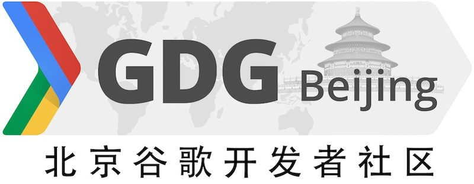

<link rel="import" href="bower_components/polymer/polymer.html">

<polymer-element name="event-about" noscript>
  <template>
    <style>
      section {
        margin-left: 5%;
        margin-right: 5%;
        margin-top: 30px;
        margin-bottom: 30px;
      }
      @media (min-width: 1120px) {
        section {
          margin-left: auto;
          margin-right: auto;
          max-width: 800px; 
        }
      }      
      section img {
        width: 50%;
      }
      #contact {
        font-size: 85%;
      }
    </style>
    <section>
      
      <p>DevFest 是 Google 赞助发起的全球性开发者活动，活动内容完全由世界各地的 GDG 社区志愿者自行策划组织。
      DevFest Suzhou 是由苏州 GDG 社区组织的大型开发者活动，XXXXXXXXXXXXXXXXXXXXXXXXXXXXXXXXXXXXXXXX
      大会主页见<a href="http://devfest2014.dushu.hu/">这里</a>。</p>
      <p id="contact">本次活动由组织者 <a href="https://plus.google.com/+GuokaiHan/posts">XXXXXXXXXXXXX</a> 负责，如需联系请邮件 XXXXXXXXXXXXX 。</p>
    </section>
    <section>
      
      <p>GDG , 即 Google Developer Groups 或 谷歌开发者社区，是谷歌开发者部门发起的全球项目。
        GDG 是面向对 Google 和开源、开放技术感兴趣的公益性开发者社区，内容涵盖 Web/Chrome、Android 和其它 Google API 等。
      </p>
      <p>苏州 GDG 是XXXXXXGDG 社区，活动完全由志愿者自行组织，常年举办各种线下技术交流活动。欢迎加入苏州 GDG 社区！
      </p>
    </section>
  </template>
</polymer-element>